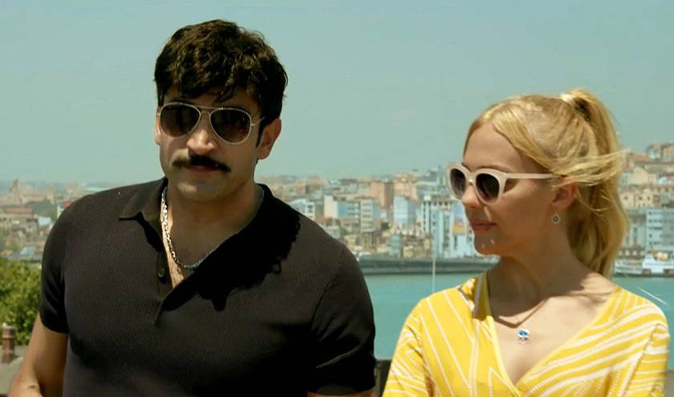

Başlığın devamı şu şekilde olabilir: Türk milli takımı keşke Almanya’dan seçilseydi. Cingöz Recai filmini merakla bekleyip ilk çıktığı gün izlemeye gittik. Ne de olsa çocukluğumda bulabildiğim bütün kitaplarını elden geçirmiştim. Sonuçta bu kitapların verdiği tadın yanına dahi yaklaşamayan bir film izledik. Yanlış anlaşılmasın film kötü değil vasattı.
Filmden sonra insan ister istemez sosyal medyaya bakıyor. Bu kelimeden de nefret ediyorum ama neyse. Yanlış anlaşılmasın kendisinden değil adından söz konusu nefret. Diyorlar ki film iyi, diyorlar ki film kötü. Sosyal medyada sık tekrarlanan bir kalıba rastlıyorum. Diyorlar ki bir Arsen Lüpen çakması olan Cingöz Recai’den ne bekliyordunuz? Nereden duyduysa… Cahillik işte bu. Duyduğunu sorgulamadan inanmak. Tabii bir de birden çok kişi aynı şeyi söylerse, dünyanın en doğru önermesi oluveriyor duyduğu. İnsanoğlu maymundan gelmeseymiş koyundan gelecekmiş. Peki, bu insanlar nasıl benim kaşıma çıkabiliyor diye sormayacağım. Sosyal medya kullanan koca profesörler var bir, bu insanlar sokakta da karşımızdalar zaten iki.
Gelelim işin aslına. Peyami Safa tabii ki Arsen Lüpen karakterini çaldı. Zaten çalakalem, para kazanabilmek için yazılmış bu eserlerin altına adını dahi yazmamış. Annesinin adı olan Server Bedia’yı kullanmış. Ama bu eserler bir değer taşıyor. Ben şahsen çeviri eser okumayı sevmem. Cingöz Recai bir şekilde yerli bir karakter. Okursanız görürsünüz kendisi İstanbul’da dolaşıyor, şu anki gibi içine edilmemiş İstanbul’da.

Film ise Cingöz’ün çizgisine yaklaşmasına rağmen maalesef eksiklerle doluydu. Bu arada Ayhan Işık’ın filmini izlemedim, ben eski film izlemeyi sevmem. Filmin görüntü kısmı zayıftı, bazı sahnelerde kamera titriyordu. Onur Ünlü denen adam da bu film için yanlış. Bence kendisi samimi mahalle dizisi işine geri dönsün, zira ne eski fillerinde ne de Cingöz’de beni tatmin edemedi. Bir de Cingöz aşık olmaz kardeşim, hele böyle bir kadına.
Milli takım hakkında da bir şeyler söylemeliyim, ne de olsa spor bölümü için yazıyorum. İzlanda maçı üzerinden çok geçti ama aklımda kalan iki konu var. Birincisi, bu takım yerine PTT 1. Ligden bir takım çıksa bu maçı(İzlanda maçı) kazanabilirdi diye düşünüyorum. Zira takımın en kötü tarafı organize olamamasıydı. İkincisi, Yılmaz Vural’ın bu çocukların da suçu yok demesiydi. Ne yazık ki ülkemizde sporcular yetişmiyor. Aslında bu toplu bir iştir. Ülkemiz de ne yetişiyor? Mercimeği bile dışardan alıyoruz.
Geçen iki yaz için yaptığım staj başvurularından altyapının neden çalışmadığını artık daha rahat idrak edebiliyorum. Dile kolay iki yılda toplam 40 yere başvurdum. Toplamda sadece iki şirket tarafından kabul edildim. Bu 38 şirket, ülkenin en iyi üniversitesinin en iyi öğrencilerinden birine ‘üzülerek’ staj yaptıramayacaklarını söyledi. Ha, beni kabul eden iki şirkette de bölümümdeki diğer stajyerler arasında bir tek ben torpilsizdim. Bu stajyerler de şaşırdı duruma. Futbolda da durum bu, basketbolu falan bilmiyorum. Amatör sporlar da başka hikâye. Bu kez ben yaşamadım ama yaşayanlardan duyduklarım beni ikna etti. Ne zaman ki liyakat baş kriter olur altyapı o zaman düzelir.